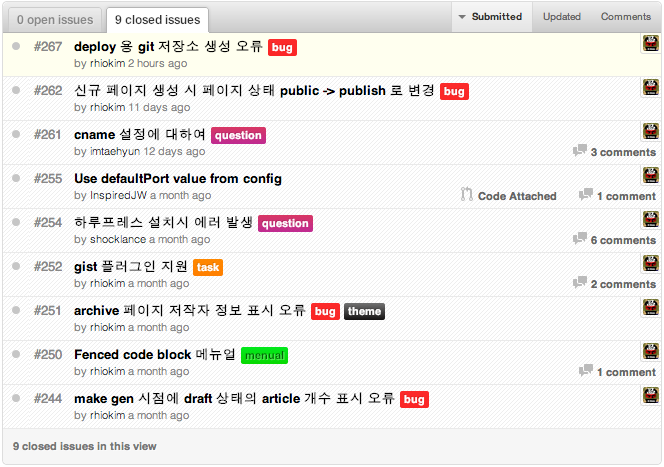

About Author

Rhio Kim
blog: http://rhio.tistory.com
twitter: @rhiokim
github: rhiokim
자바스크립트를 좋아하는 인간입니다.
- Arduino
- Node.js
- HCI
About this Article
Date Released:
Saturday, November 17 2012 2:09 PM하루프레스 v0.9.1 회고 및 릴리즈 노트
릴리즈 노트는 개인적인 회고를 위해 작성되는 포스팅입니다.
이번 버젼은 v0.9 출시 이후 몇몇 분들에 피드백을 적용하는 것과 템플릿 고도화를 위한 리펙토링 작업을 목표로 하였으나 리펙토링은 실패로 돌아갔다.
리펙토링 목표가 너무 컸고 진행하는 과정에 있어서 handlebars.js 와 mustache.js 로 테스트 하였으나 하루프레스에 딱 맞아 떨어지는 기능이 부족했다.
특히 이번에는 v0.9 출시 이후 많은 분들의 관심과 피드백으로 작은 개선을 하였다.
이슈리스트

신규 기능
- gist markdown 플러그인이 추가되었다. 만약 https://gist.github.com/1575430 의 내용을 추가하고 싶다면
[gist:1575430]방식으로 gist 를 문서에 포함시킬 수 있게 되었다. 이 기능은 현재 실험 단계이다.
이슈
- v0.9 이전 버젼들에서 마크다운 문서의 공개 상태를 나타내던
{ status: "public" }은{ status: "publish" }로 변경되었다.- 포스트 페이지 좌측 상단에 표시되던 저작자 정보(트위터, 블로그 등) 표시 오류 해결
- 하루프레스 초기화 중 배포용 저장소 지정이 되지 않는 오류 해결
make gen으로 페이지 생성 과정에서 draft 기사 목록 카운트 오류 해결
메뉴얼
- 펜스 코드 블럭에 대한 소개 및 사용 메뉴얼 작성
- 사용자 이슈 대응 2건
좋았던 점
- v0.9 공식 출시 이후 몇몇 사용자 분들의 피드백이 있다는 것이 오픈소스 프로젝트를 진행하는 입장에서 뿌듯함을 느꼈다. 또한 실 사용자들도 생겨나고 있다.
- "우리가 모르는 노드(Node.js)로 할 수 있는 몇가지" 라는 주제로 H3 컨퍼런스에서 정적 페이지 블로그 엔진 개발 경험 발표
- @imtaehyun 님이 작성한 Cloud9 IDE에 하루프레스 설치하기! 는 하루프레스를 획기적으로 사용한 좋은 아이디어를 얻을 수 있었다.
안좋았던 점
- 지난 8월부터 회사 프로젝트 릴리즈로 인해 바빴고 현재도 너무 바쁘다. 그리고 KTH H3 컨퍼런스, #PlayNode 컨퍼런스 준비로 인해 하루프레스 업데이트에 신경을 많이 못썼다.
- 사실 체력이 바닥을 보이고 와이프의 인내력 수치 또한 모두 소멸되었다.
좋은 아이디어나 오류, 버그들은 이슈트래커 를 통해 피드백 부탁드립니다.